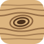

Muebles de triplay · DIY
Kntty
De unas fotos a un mueble de triplay que ajustas platicando con un carpintero experto.

Muebles de triplay · DIY
De unas fotos a un mueble de triplay que ajustas platicando con un carpintero experto.